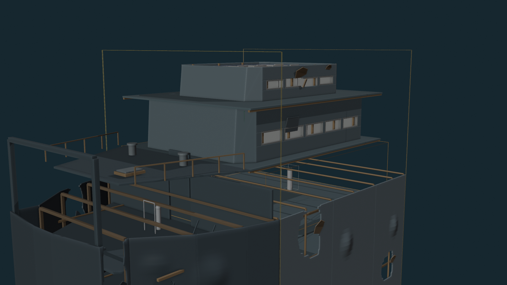
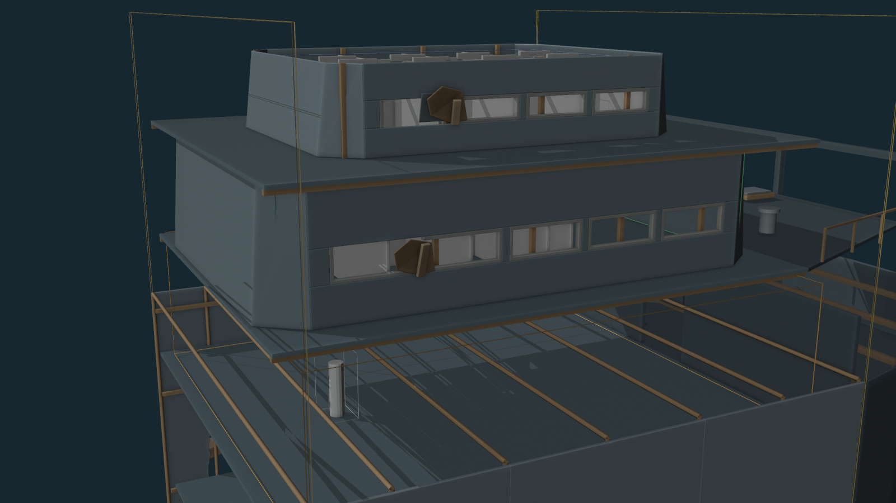
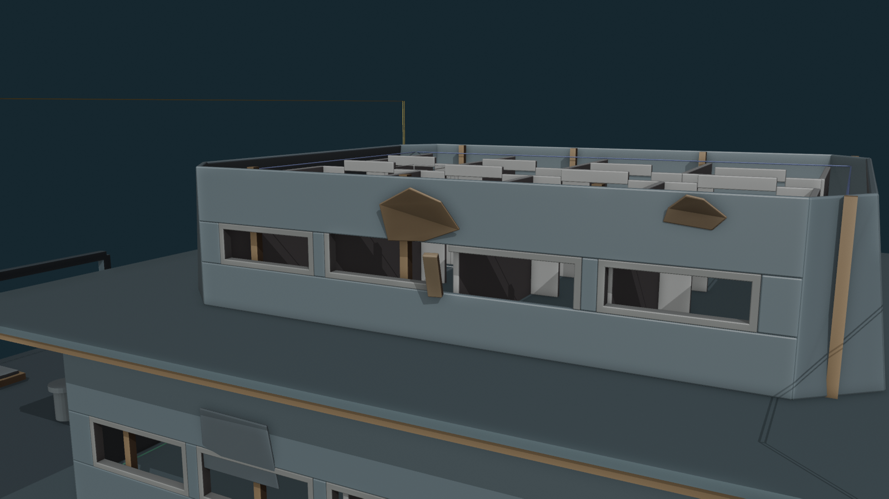
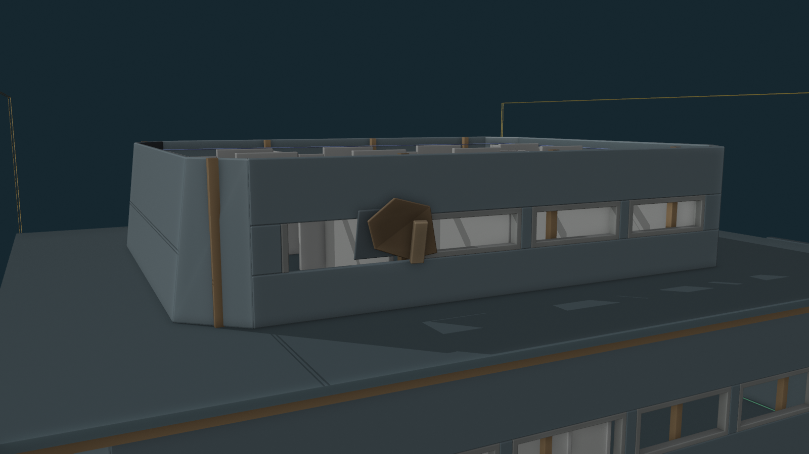
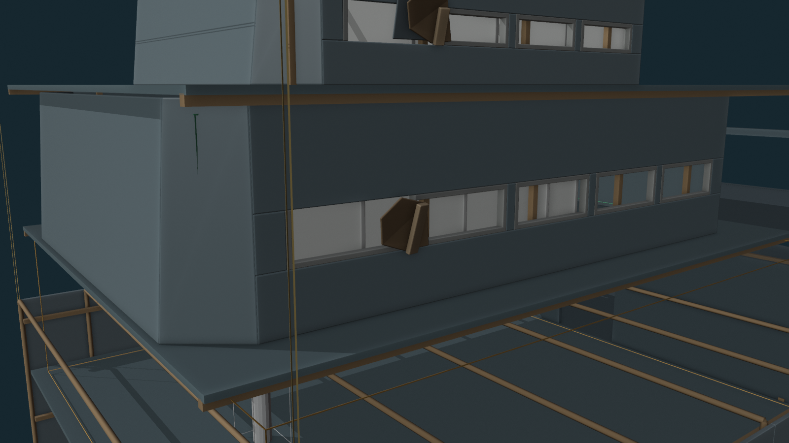
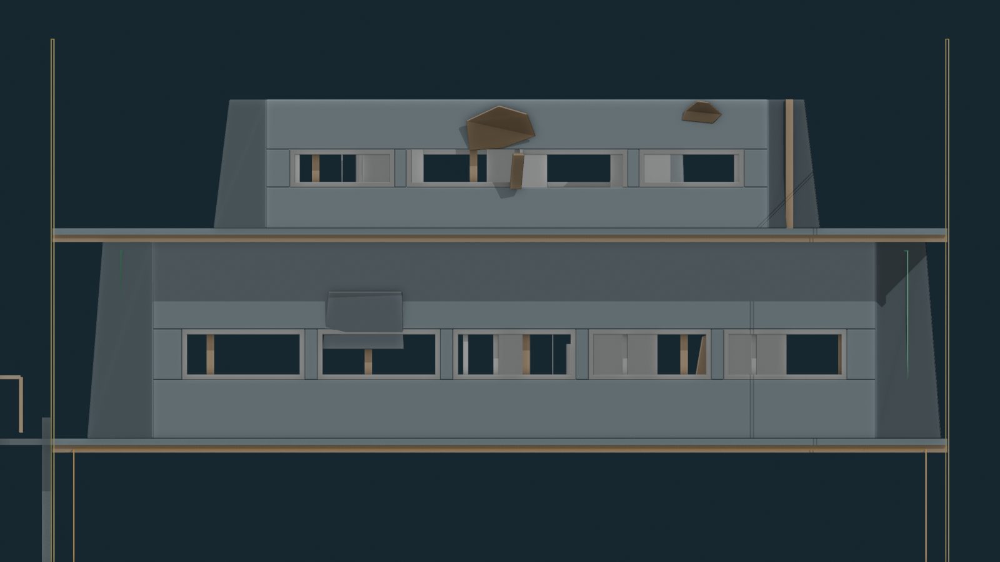
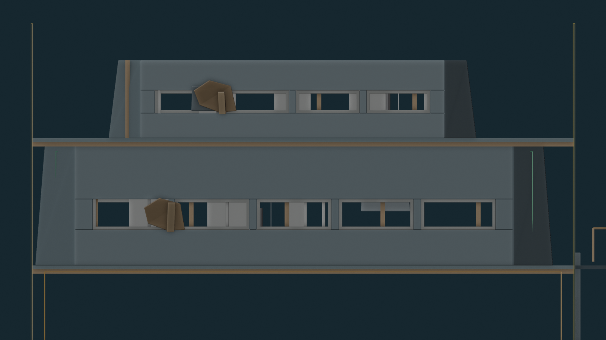

Blender QA PASS
Damage zones: 3 — 2 upper, 1 main house.
Structural frame/reveal pieces removed: 14.
Bent detached frame pieces: 3.
Peeled/torn metal fragments: 3.
V09 openings preserved: YES.
B1 main / B1 upper / B2 lounge / B3 vehicle route intrusion: NONE.
Glazing objects: NONE.
Locked hull/decks/frames modified: NO.
Overall


Upper passenger-house damage


Main passenger-house damage

Profiles


Current Gate
PASS / FAIL / more changes on V11 damage. On PASS, I’ll run a fresh structure-only Unreal re-import and collision/route/opening QA from this heavier-damage Blender authority.